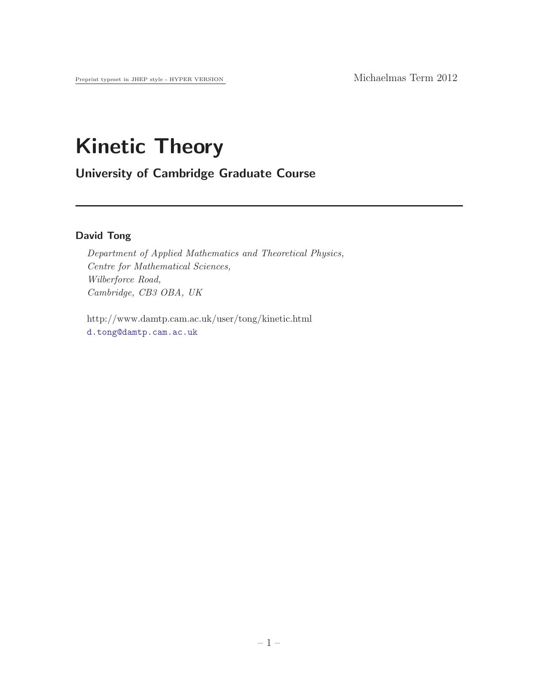

Kinetic Theory
David Tong

1. Things Bumping Into Other Things
1.1 Introduction
1.2 Basics of Collisions
1.2.1 Relaxation Time
1.3 Basics of Transport
1.3.1 Diffusion
1.3.2 Viscosity
1.3.3 Thermal Conductivity
1.3.4 Conservation Means Diffusion
2. Kinetic Theory
2.1 From Liouville to BBGKY
2.1.1 The BBGKY Hierarchy
2.2 The Boltzmann Equation
2.2.1 Motivating the Boltzmann Equation
2.2.2 Equilibrium and Detailed Balance
2.2.3 A Better Derivation
2.3 The H-Theorem
2.4 A First Look at Hydrodynamics
2.4.1 Conserved Quantities
2.4.2 Ideal Fluids
2.5 Transport with Collisions
2.5.1 Relaxation Time Approximation
2.5.2 Thermal Conductivity Revisited
2.5.3 Viscosity Revisited
2.6 A Second Look: The Navier-Stokes Equation
3. Stochastic Processes
3.1 The Langevin Equation
3.1.1 Diffusion in a Very Viscous Fluid
3.1.2 Diffusion in a Less Viscous Liquid
3.1.3 The Einstein Relation
3.1.4 Noise Probability Distributions
3.1.5 Stochastic Processes for Fields
3.2 The Fokker-Planck Equation
3.2.1 The Diffusion Equation
3.2.2 Meet the Fokker-Planck Equation
3.2.3 Velocity Diffusion
3.2.4 Path Integrals: Schrödinger, Feynman, Fokker and Planck
3.2.5 Stochastic Calculus
4. Linear Response
4.1 Response Functions
4.1.1 Linear Response
4.1.2 Analyticity and Causality
4.1.3 Kramers-Kronig Relation
4.2 Classical Examples
4.2.1 The Damped Harmonic Oscillator
4.2.2 Dissipation
4.2.3 Hydrodynamic Response
4.3 Quantum Mechanics and the Kubo Formula
4.3.1 Dissipation Again
4.3.2 Fluctuation-Dissipation Theorem
4.4 Response in Quantum Field Theory
Back to Home